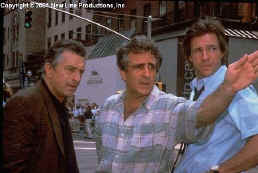
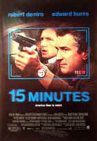
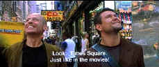
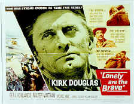
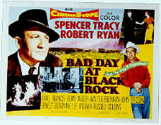

Director Walks the Wire
John Herzfeld Interviewed by Stu Kobak
Testing his balance once again, writer/director John Herzfeld is walking
the high wire between an action and black comedy flick without a net. In 15 Minutes, the
filmmaker’s latest, the mixed tone presents plenty of challenges. Herzfeld is not only a
filmmaker, he's a film lover. Armed with a archive of film images etched in his memory and buoyed
by arsenal of film technique, Herzfeld is a director who can go out on a limb with confidence. 
Herzfeld was inspired to write 15 Minutes by a couple of subjects
swirling around in his head: "One, I had become aware of Fire Marshals/Arson Investigators,
and I felt that there are so many cop stories that I wanted to do a story where one of the lead characters
is a 'policeman' within the fire department--who carries guns, makes arrests--but also determines
cause and origin of a fire. I was fascinated by that occupation and thought it had not been played
out in movies. The other thing that was running through my head was the media and how the media's
job is so tough today in our society and the stories they put on TV--are they just reporting the
news or are they titillating the public? I do think they have a tough job today. I tried to wrap
the two themes around and tell a story that had some social commentary and satire." It wasn't easy getting 15 Minutes green-lit explained the director:
"I think that
since the tone of the movies wavers from sometimes drama to humor, that I got the movie done not
only because of 2 Days in the
Valley, but also an HBO movie, Don King: Only in America both which
had tones that wavered between drama and comedy."
15 Minutes
takes shots at everybody: the media, law enforcement agencies, the public, the legal system, no
one is spared. "I tired to be very even-handed. I had something I wanted to say. New Line was
great in that they let me say it. Some people might have thought that I was a little too harsh, but
again, there's a statement there and if you get it you get it."
Black comedy is often confusing and provokes mixed emotions. Audiences really
need to be in synch with the humor from the get-go. Herzfeld's earlier film, actually written after
15 Minutes, 2 Days in the Valley was great black comedy, but there was no mistaking
the tone. Even the add campaigns emphasized the twisted dark humor of the ensemble film. When watching
15 Minutes, I explained to Herzfeld, I found myself laughing
uncontrollably and feeling uncomfortable about my reaction. "Actually, your response is frankly
what I hoped for," the director responded. "I knew there'd be a certain level of
discomfort. You're laughing at guys who are performing some heinous deeds. That was part of my
intension, to mix the humor, that was how I thought I would achieve the satire. Is it like
performing on a high wire in some aspects? Yes, it is. You just go by your gut and hope that it's
working."
Marketing Nightmares

The director did whatever he could to set the mood straight from the beginning
of 15 Minutes. The airport immigration scene is really hilarious, but it's unsettling too,
coming from the expectations of an action film. But the music clearly tries to set the mood. It's
playful with a slightly dark edge. "I worked
so hard on music, you have no idea," emphasized Herzfeld. The director explains that music in
a movie is especially important to him. In 2 Days, he's most proud of the music in the
pivotal fight scene between the two women. "If you listen to the score of that
scene-- it's one long musical piece. And I think music is half the movie."
|
The 2 Days big fight. ©HBO |
Herzfeld and the 15 Minutes team used the preview process extensively. "We had three previews. I find the process nerve-wracking, but it's very helpful," explained the director. "You see what works and doesn't work. But at the same time you have to be very aware that it is a preview and you're in an audience that could be located in a specific part of the city that draws a certain crowd. Not all previews are fool proof. Some movies don't work in preview and the success of the movie defies the preview process. Seven was like that. I think it's most important to listen to an audience during the movie rather than reading the cards and listening to the focus groups. In the 2 Days in the Valley previews, because no one had known Charlize Theron and we had so many familiar faces in the movie, she got wildly mixed reactions. We had wild reactions to the fight scenes between the two women."
Mixed Challenges
 |
|
Welcome to Times Square. ©New Line |
Mixed tone is not the only challenge of 15
Minutes. Video footage is frequently intercut with standard film sequences, creating some
interesting visual juxtapositions. The use of the video camera is not just gimmick but an integral part of
15 Minutes,. As a device, it exists as social commentary and it also is a way of distancing
the audience fromt he violence. "Everybody's got a video camera these days. Those scenes were shot with a
video camera you buy at Costco or your local camera store." You can tell by the excitement in
the director's voice how pleased he was by the seamless integration of the video footage. "I shot video and transferred it to film
and that's what you get. That's the point I wanted to make. I thought the video would help me take
the edge off some of the scenes that have violence, especially using some of the camera's effects--it would
be much less graphic." Herzfeld's artistic use of video is kind of like painting. "The whole
look of the movie is inspired by Frances Picabia who is a great French portrait painter of the thirties
and forties. He's not very well known, but he painted very lurid richly saturated paintings. Every
one of my movies I generally base the palette on one particular artist. For 2 Days it was a great
painter, Charles Pesat who was a Southern California water colorist. He worked for Disney and did
some of the original films like Dumbo, Cinderella. He had a short water color career because he
ended up doing animation."
Casting is one of the great arts of filmmaking. Directors need a
sixth sense to know how one actor will mix with another on camera. Herzfeld explained how he came
to some of his 15 Minutes decisions: "I had seen Ed Burns in Brothers
McMullen. I thought he did some
great stuff and had a great screen presence and a really honest quality to him. Ed was the right age
and he was big and I thought he would be really good for Jordy. Robert DeNiro, what can I
say--probably myself and a hundred other directors write with Robert DeNiro in mind. Frankly,
I was
just very lucky to get him. He responded to the material and had seen my last two pictures. He was just
wonderful to work with and has become a friend. In terms of the two Eastern Europeans, I had seen
Oleg Tatarov fight in the Ultimate Fights because I'm a boxing and fight fan. I talked to my
casting director and she brought him in and it turned out serendipitously that he had been studying
acting and he actually quit fighting because he wanted to be an actor. He's very serious about it.
When he was in the waiting room one of the actors waiting to read asked him, 'Hey, aren't you
the fighter? and he said , No, I'm an actor' and stared at the guy who thought he was going to kill
him. Karel (Roden), we found in Prague. He was very well known in the Czech Republic. He's a wonderful
actor, the complete opposite of what you see on the screen. In person, he's an extremely quiet,
very soft spoken, very gentle and very sensitive man. Once he gets in front of the camera,
something happens. He's very focused."
Looking Ahead
15 Minutes was green-lit and
produced by filmmaker friendly former New Line production head Michael DeLuca. I wondered if
things might change for filmmakers like Herzfeld on the departure of De Luca. "When Mike DeLuca left,
Bob Shaye, who's the president, was very supportive to me. I was heartbroken to see Michael leave
because he was with us from the beginning, Shaye was great. The new guy, who has Mike DeLuca's
position, Toby Emmerich is a pretty hip, very sharp guy. He is very unusual and unique since he's a
writer (Frequency) and not only is he a writer but he was also head of the music department. I'm
very interested to see what the next slate of films under him will be. He's the kind of guy who's
multitalented." Clearly, Herzfeld expects his New Line relationship
to continue successfully. While nothing is in production yet, the writer/director is working on a
couple of projects. "I want my next movie to be
very different. I want to change completely. I am determined to do a comedy or a love story. I just finished writing a
script--a comedy--a real out and out comedy which has a lot of edge to it, but I don't want to discuss it
too much because I am just about to go out with it to the town. I want to be safe here or it will
end up somewhere else," the director emphasized with a small laugh in his voice." Another
Herzfeld pet project he'd like to get off the ground is a romance. "There's one I'm
writing now that's untitled, a love story that's purely character driven, not high concept. It's
very emotional, the feel of which is people trying to get through past the way they were brought up
in order to live in today. You know how a lot of people--they've experienced something in their
childhood that has damaged them or tainted them and made them very defensive and wounded them and
until you can get past the baggage and they can take the anchor off their backs they can't love
because they're angry. I think a lot of people have through that and I am trying to deal with that
theme."
Being a writer/director places a filmmaker at a distinct advantage.
"It helps when you've written something because you're not struggling at times to understand
what the writer intended. Sometimes, in some ways, a director will have a little advantage if he's
written the script. For me, when I write a script, I am open to any suggestions or criticisms. I
don't take anything personally. I really have no ego at all. You know as long as it doesn't
impugn the integrity of what you were trying to do it's okay."
Movie Inspirations
The cultured and erudite John Herzfeld broke into Hollywood first as an
actor. But he always wrote. "I am very fortunate in the fact that I never thought about
anything else but being in the movies, acting writing or directing. I'm from New Jersey, my father
was in the maintenance business, we did not know anyone in the movie business, but my father took
me and my brother to plays and to movies. I think once I saw my first movie which I think was 7th
Voyage of Sinbad, that was it. The first movie when I was a kid that I waited until the end to see
who wrote this movie was Spartacus. The movie's still my favorite movie of all time. All
I could think about as a little kid was who wrote such a big story, I mean slaves and Rome and this
and that and I remember thinking, Dalton Trumbo--someone wrote this movie. His accomplishments are
amazing." Once you get Herzfeld started talking about movies, his excitement level revs up
near red line: "Kirk Douglas is phenomenal. Kirk Douglas is one of the greatest actors of this century.
You know what I loved about him--him and Burt Lancaster--they had such passion, man, they weren't
afraid to go for it. Remember Lust for Life. Remember the Wilder movie, Ace in the Hole--there's
Paths Glory. Lonely are the Brave  
You know a guy really knows his movies when you suggest that the
great Kirk Douglas vehicle Lonely are
the Brave featured the best one-handed fight in the movies and the instant response is
"You mean you think the first was Spencer
Tracy." Spencer Tracy played a one armed man returning from the war in Bad Day at Black
Rock. John Herzfeld truly loves movies. His
knowledge and passion about films gives him the ammunition to produce original material. "I'll tell you one thing, I agree with Spence Tracy-- that was a great fight scene--but I love when
Kirk walks into that bar, I love the way the guy hates him.
Caught up in the euphoria of talking movies, Herzfeld marvels at what was
accomplished in film before computers provided instant armies. "You know what has one of the most amazing shots in the history of
cinema--when was the last time you saw The Longest Day--when the Americans and the Irish come into
a little French town that's being held by the Germans. They start coming down the street. There
is a shot that is basically in one shot, moving slowly right to left across the screen and then
finally pulling back to this huge wide shot, and you see an entire town under siege being attacked from
every direction and defended from every direction--with guns and canon fire, machine gun fire and
grenades--all going off in different directions simultaneously--and when you watch this, you say to
yourself, my God there's no computer graphics here--this is all done live all at the same time.
That's a shot that will blow your mind. It's an extraordinarily war film that's never mentioned and it's
really great."
The Longest Day was a big budget Hollywood extravaganza. Herzfeld
may have had significant production dollars for 15 Minutes, but 2 Days in the Valley
was produced on Indie ingenuity. Herzfeld pondered the difference between helming a big budget production and a small budget production.
"The pressure is once you as a director/producer sign off on the
budget and look the studio in the face, yes, we have gone back and forth here and there, but I will
deliver this movie for the amount of movie we have agreed upon barring anything out of my control.
For me, I think it is incumbent upon me as a filmmaker to deliver what I'd said I'd do and not go
wildly over budget. So that's the pressure, once you say you're gonna do it, you got to do it.
There's certain compromises you have to make in terms of how long it takes you to shoot this and
how long it takes you to shoot that, but you've got to deal with it." There are obvious dollar
impacts endemic to big star productions. "Everything goes up. There's certain things
that just occur during the movie and you have to make up for it in other places. That's what it's
all about."
John Herzfeld is one of those actor friendly
directors. Having started out in actor's clothing, the writer/director understands the wrinkles
necessary to extract the best performance. "There's a lot of actors I'd love to work with. I'd like to work with
Brad Pitt--I think he's a terrific actor but I also think he's one that people really have
seen what he can do. It's just an instinct of mine. I think there's a lot of sides to him that we
haven't seen. I'd like to work with Pacino. I think he's great. I'd love to work with Mel Gibson--he's tremendous. I'd like to work with Tom Hanks, Tom Cruise. I'd like to do a woman's movie
too, not actually a woman's movie but a movie with a woman in the lead. A very strong woman. I had
a lot of very strong women characters in 2 Days in the Valley and the project I was just talking
about tentatively titled Journey basically has women in the lead. I think that some of these strong
or most commercial actresses are those who have done great romantic comedies. Julia Roberts,
everyone knows that she's terrific but I'd really like to see her pull out all the plugs. I think
Cameron Diaz has come such a long way, is such a strong actress. I think Charlize is terrific. I'd
love to see Sandy Bullock in something that really challenges her because I think she's real smart.
She's really funny but I think she's got a lot on the inside too. I would love to work with Brando. And of course Jack Nicholson. Gene Hackman's great. He was so
great in The Unforgiven.
Herzfeld watches those late night flicks in the comfort of his own home
theater. "I have a very large room that I built on that has an intricate sound system.
I have a sixty inch Sony television. It's media room.
It's really meant for showing movies. Today I spend a lot of time
watching movies at home. Herzfeld still dips into his laser disc collection when something
interesting has not yet made it to DVD. While he continues to make movies for audiences, Herzfeld
continues to devour movies himself, enjoying, learning, honing his craft.

Selections from the Feature Archive include articles on
Akira Kurosawa, Frank
Darabont, Blonde Bimbos, Hollywood Street Gangs, or Vietnam: The
Hollywood Pariah, and many more....
Sturges Emerges
Preston Sturges was Hollywood's resident comic genius for more than a decade. His movies are
timeless. Click on his image to read all about it.

 Have you visited Home Theater
Talk lately? One of the friendliest places on the Net for Home Theater and DVD discussion, you
can get help for installation problems or simply share your opinions with other Vidiots.
Have you visited Home Theater
Talk lately? One of the friendliest places on the Net for Home Theater and DVD discussion, you
can get help for installation problems or simply share your opinions with other Vidiots.
European film portal and hard to find video store.

The National Film Preservation Foundation (NFPF) is the nonprofit organization created by the U.S. Congress to save
America's film heritage.
 Kinoeye Archive
Kinoeye Archive
This is a resource of all content-rich
materials on the web relating to Central and East European cinema. The ultimate aim of the Kinoeye
Archive is to provide a near-as-damn-it definitive index of intelligent and thoughtful
English-language analysis of Central and Eastern European cinema on the web.
Terrific resource for learning about the ins and outs of movie
poster collecting.

Information on film sound in theaters and home theaters. Lots of helpful information provided in a
handsome interface.

DVD
Demystified makes it all clear. The official Internet DVD FAQ for the rec.video.dvd
Usenet newsgroups.
Imaging Science Foundation
The Imaging Science Foundation promotes proper standards in home theater viewing. ISF trained
technicians offer monitor calibration services to consumers. The difference in a properly
calibrated monitor can be astounding. Click on the image to find an ISF member near you.
 Sight and Sound Magazine is the venerable voice of The British Film
Institute. The site includes articles and film reviews. A great resource in print and on the
Internet.
Sight and Sound Magazine is the venerable voice of The British Film
Institute. The site includes articles and film reviews. A great resource in print and on the
Internet.

ISF Monitor Calibrations in the
Tristate New York area. Lots of hardware info and frequent hardware peaks from video expert Kevin
Miller.They may be judgmental, but that's the point, isn't it. Lots of DVD reviews plus news and
more.
One of the Web's most religiously followed DVD reviewers, Robert
(Obi) George fires the review guns at the Home Theater Forum and from his own site as well.

Nearly 40 key software and
hardware companies representing leading consumer electronics giants, major movie studios home video
and music video units have joined forces to establish the DVD Video Group.

The Movie Poster Archive includes extensive poster images from the films of stars like Susan Hayward, Kirk Douglas, Katharine Hepburn and many more. Our featured star is William Holden.
A heist delivered in simple strokes and sudden fury. Harvey Keitel
is relentless.

The major studio vaults are filled with incredible film treasures which
few have seen the light of DVD.
Open the Vaults